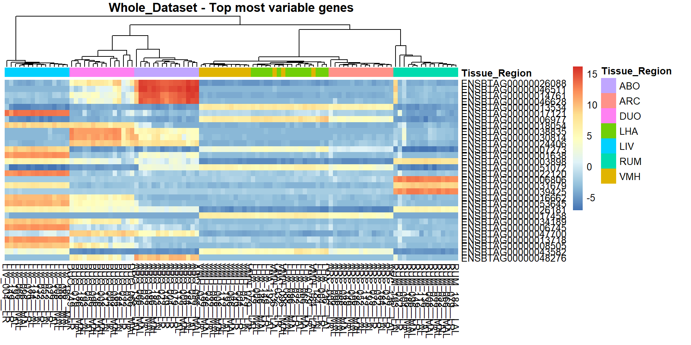
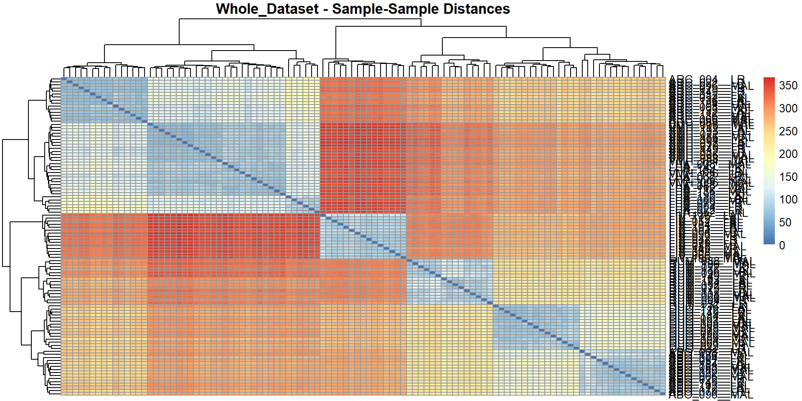
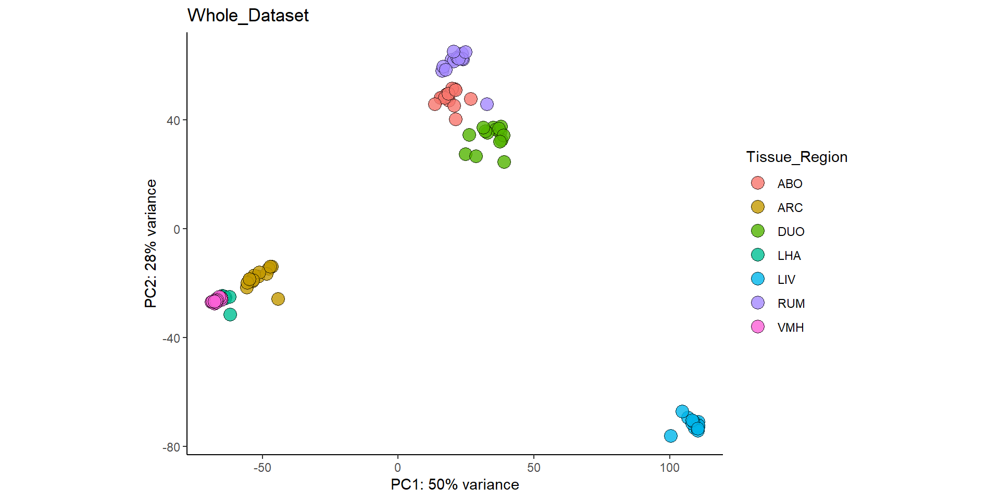
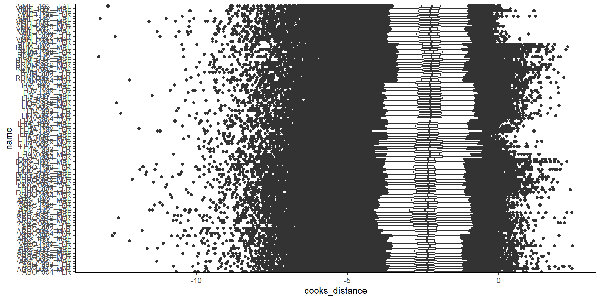

Chapter 9 Whole dataset normalisation
After the DE analysis is complete, it is important to normalise the data across the entire data set for downstream co-expression analysis (PCIT) and other analyses.
This uses the same auto_generate_DE_results() function but with
whole_dataset_normalisation = TRUE. The example below shows the minimum
information the function needs to run.
full_norm <-
auto_generate_DE_results(se_data = seq_data,
top_level_colname = Tissue_Region,
sample_colname = sample_names,
samples_to_remove = NA,
DESeq2_formula_design = ~Treatment,
gene_annotations = gene_annot,
export_tables = TRUE,
export_dir = "./outputs/",
whole_data_normalisation = TRUE)
## Whole data normalisation selected. No pairwise results will be generated.
## renaming the first element in assays to 'counts'
## Warning in DESeq2::DESeqDataSet(se_data0, design = DESeq2_formula_design): some
## variables in design formula are characters, converting to factors
## Beginning DESeq analysis...
## estimating size factors
## estimating dispersions
## gene-wise dispersion estimates
## mean-dispersion relationship
## final dispersion estimates
## fitting model and testing
## -- replacing outliers and refitting for 398 genes
## -- DESeq argument 'minReplicatesForReplace' = 6
## -- original counts are preserved in counts(dds)
## estimating dispersions
## fitting model and testing
## Completed DESeq analysis.
## Plotting cooks distance...
## Cooks distance plot complete.
## ./outputs/ Directory exists
## Normalised tables exported to the sub-directory: ./outputs/
## Preparing data for output...
## List output succesfully generated.
##
##
## ******************* END *******************
9.1 View Cooks distance boxplot for whole dataset
boxplots2 <-
GET_boxplot_cooks_distance(auto_DE_output = full_norm)## $Whole_data_normalisation_output